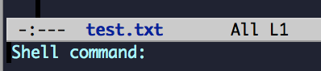
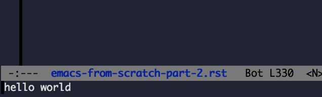

Emacs From Scratch, Part 3: Extending Emacs with Elisp
This is a series of tutorials geared around building up your own customized environment, using emacs, from scratch.
You can find part 1 here You can find part 2 here
Extending Emacs with Elisp #
If you've followed the previous tutorials, you're familiar with loading configuration, and you now have a system that can download packages for you from the various Emacs package repositories. Now let's dive into where Emacs get's really fun: extending Emacs yourself.
One of the things I love about modern programming is the idea of feedback as quickly as possible: it's great to see the result of the changes of your code instantly. So let's try writing a generic way to do this. We'll write a function that adds a hook to an Emacs buffer, so when it saves, a shell command will run. (e.g. 'python myscript.py' for a python script, or running unit tests, etc)
Create a file called my-methods.el, adding it to your .emacs.d/ directory. To write our command, we'll need to do the following:
- a hash to store (buffer, command) pairs to run
- create a method to add a (buffer, command) pair to our hash
- look in our hash if a buffer is saved, and run the command if the buffer exists in the hash
- remove entries from our hash if the buffer is killed
So let's start by adding our hash:
; my-methods.el
(setq my-command-buffer-hooks (make-hash-table))
(setq <name> <value>) will set a variable <name> to a value <value>. This is one way of instantiating a variable in elisp. There are other ways, such as defvar, but I chose setq because we are simply defining an internal variable for usage. Other variations which define variables typically provide some other purpose, such as a user-customizable value or a constant.
Now that we have our hash table, let's start adding to it! We'll write our first function to my-methods.el:
; my-methods.el
(defun my-command-on-save-buffer (c)
"Run a command <c> every time the buffer is saved "
(interactive "sShell command: ")
(puthash (buffer-file-name) c my-command-buffer-hooks))
This method takes in a variable 'c', takes the current buffer, and adds pair of (buffer-name, command-as-a-string) to our hash. This is a short function, but it's a dense amount of functionality, so it's worth explaining a bit further.
defun #
Defun is the standard way to define a function. It uses the following syntax:
(defun <method_name> (<var_a> <var_b>...)
<docstring>
<interactive?>
<method_body>)
Here's a description of each:
- <method_name>: a symbol to populate with the method
- <var_a> <var_b>... : a list of symbols to populate with passed parameters
- <docstring>: a string explaining what your method does
- <interactive?>: options. we'll take about this more in a second
- <method_body>: a lisp expression which has access to <var_a> <var_b>... symbols described above.
So pretty standard for a method definition in any language, except for (interactive?).
interactive #
So what is interactive? Well, it's an optional expression, which, if passed in to defun, makes the method 'interactive'. Interactive basically means it's one of the command that can be run by 'M-x': it becomes a publicly exposed command that an Emacs user should be able to run.
(interactive) by itself results in a command that does not ask the user for input. In other words, it's only useful for commands that have no variables.
If we want the user to be able to type some input, we need to add in a string into interactive, like our example above:
(interactive "sShell Command:")
So this will take in a single string. So how do we know it always takes a string and only a string? Well, it's the first 's' in the "sShell Command". The first character is called an 'interactive code': it's a way to express what the expected input is. Specifying the proper interactive code is important: codes such as 'D' (directory name) or 'C' (emacs command) can provide auto-completion, making your function all the more useful.
Multiple arguments can be passed by delimiting with newlines:
(interactive "sA String:\nDA Directory")
A full list of interactive codes can be found here: interactive codes
puthash/gethash/remhash #
So the one thing that might be a little strange if you work in a primarily OOP environment: (puthash <map> <key> <value>) instead of something like <map>.put(<key> <value>).
elisp is a functional language, which means that everything is, essentially, a function or data. There is no real concept of object-oriented programming: if you want to modify an object, you call a method with the object as the argument, not an object calling a method.
To work with a hash, elisp provides puthash/gethash/remhash. You can read more here: hash-access
So at this point, you should have all the info you need to understand the my-command-on-save-buffer option.
Now let's add a couple more functions to complete our hook.
my-command-on-buffer-run-hook #
Add the following to you my-methods.el:
; .emacs.d/my-methods.el
(defun my-command-buffer-kill-hook ()
"Remove a key from <command-buffer-hooks> if it exists"
(remhash (buffer-file-name) my-command-buffer-hooks))
This function removes the current buffer from the hooks hash. Pretty straightforward with what we know now.
And this one:
; .emacs.d/my-methods.el
(defun my-command-buffer-run-hook ()
"Run a command if it exists in the hook"
(let ((hook (gethash (buffer-file-name) my-command-buffer-hooks)))
(when hook
(shell-command hook))))
This is the actual function that runs the hook. Note the extra check wrappend in a with. (when is a shorthand for if with only one argument. It's more lisp-esque to provide shorthands like this).
Finally we need to add the hooks so that these function actually run:
; .emacs.d/my-methods.el
;; add hooks
(add-hook 'kill-buffer-hook 'my-command-buffer-kill-hook)
(add-hook 'after-save-hook 'my-command-buffer-run-hook)
Emacs provides a nice hook implementation. pass in the hook name you want to listen to, and the function name you want to call.
And that's it! give it a shot. In fact, let's try it our Emacs now. open up my-methods.el and type: M-x eval-buffer. Voila! you know have your my-command-on-save-buffer. Emacs has the ability to evaluate code with it's lisp interpreter, which allows modifying the global state of the editor itself. By evaluating our code, we basically just added the functions we writing to the actual emacs instance we've been working in!
Now this is what I'm saying when I love modern programming. Getting automated feedback faster is always better, and Emacs is great at providing fast feedback on editor changes. You don't even have to restart your process! You can modify the environment you're working in, as you're working on it, and see the changes instantly!
Anyway, let's try our new functions with a test file.
Open a file /tmp/tmp.txt, save it (C-x C-s), and run: M-x my-command-on-buffer-save. It'll ask you far a shell argument.

Type in the following:
echo 'hello world'
Now type something and save your file. boom! The output should be in the mini-buffer (you can see the full output in the *Shell Command Output* buffer).

Congrats! You've just written your first functional elisp function. And it's pretty useful too.
If you want to learn more about developing elisp code, you can't go wrong with the elisp manual. Like most languages, some things are not going to be the most intuitive in the beginning. However, as you become more comfortable elisp will start to feel like just another amazing feature of Emacs.
The other way to learn a lot is by looking at other people's emacs packages and files. Go to melpa, find a package you like, and click the 'source' link, and start reading!
Summary #
Here's what we learned:
- elisp is a functional languages: everything is done through functions
- defun is used te define methods, and can have docstrings and can be interactive
- elisp uses hashes, and uses puthash/gethash/remhash
- Emacs can evaluate code and modify it's interpreter on the fly
Final Code #
Note: this includes code from part one
.emacs:
(load "~/.emacs.d/my-loadpackages.el")
(load "~/.emacs.d/my-methods.el")
(add-hook 'after-init-hook '(lambda ()
(load "~/.emacs.d/my-noexternals.el")))
.emacs.d/my-methods:
; ~/.emacs.d/my-methods.el
(setq my-command-buffer-hooks (make-hash-table))
(defun my-command-on-save-buffer (c)
"Run a command <c> every time the buffer is saved "
(interactive "sShell command: ")
(puthash (buffer-file-name) c my-command-buffer-hooks))
(defun my-command-buffer-kill-hook ()
"Remove a key from <command-buffer-hooks> if it exists"
(remhash (buffer-file-name) my-command-buffer-hooks))
(defun my-command-buffer-run-hook ()
"Run a command if it exists in the hook"
(let ((hook (gethash (buffer-file-name) my-command-buffer-hooks)))
(when hook
(shell-command hook))))
;; add hooks
(add-hook 'kill-buffer-hook 'my-command-buffer-kill-hook)
(add-hook 'after-save-hook 'my-command-buffer-run-hook)
.emacs.d/my-noexternals.el:
; ~/.emacs.d/my-noexternals.el
;; Remove scrollbars, menu bars, and toolbars
(when (fboundp 'menu-bar-mode) (menu-bar-mode -1))
(when (fboundp 'tool-bar-mode) (tool-bar-mode -1))
(when (fboundp 'scroll-bar-mode) (scroll-bar-mode -1))
;; Wind-move
(global-set-key (kbd "C-c C-j") 'windmove-left)
(global-set-key (kbd "C-c C-k") 'windmove-down)
(global-set-key (kbd "C-c C-l") 'windmove-up)
(global-set-key (kbd "C-c C-;") 'windmove-right)
.emacs.d/my-packages.el:
; ~/.emacs.d/my-packages.el
(require 'cl)
(require 'package)
(add-to-list 'package-archives
'("melpa" . "http://melpa.milkbox.net/packages/") t)
(add-to-list 'package-archives
'("marmalade" . "http://marmalade-repo.org/packages/") t)
(package-initialize)
(defvar required-packages
'(
magit
yasnippet
) "a list of packages to ensure are installed at launch.")
; method to check if all packages are installed
(defun packages-installed-p ()
(loop for p in required-packages
when (not (package-installed-p p)) do (return nil)
finally (return t)))
; if not all packages are installed, check one by one and install the missing ones.
(unless (packages-installed-p)
; check for new packages (package versions)
(message "%s" "Emacs is now refreshing its package database...")
(package-refresh-contents)
(message "%s" " done.")
; install the missing packages
(dolist (p required-packages)
(when (not (package-installed-p p))
(package-install p))))
.emacs.d/my-loadpackages.el:
; ~/.emacs.d/my-loadpackages.el
; loading package
(load "~/.emacs.d/my-packages.el")
(require 'magit)
(define-key global-map (kbd "C-c m") 'magit-status)
(require 'yasnippet)
(yas-global-mode 1)
(yas-load-directory "~/.emacs.d/snippets")
(add-hook 'term-mode-hook (lambda()
(setq yas-dont-activate t)))
What's Next #
That's it for now! You should now have the basic set of knowledge to start hacking and trying things yourself:
- an automated way to install packages and define the ones you want
- a place to load the packages, and augment behaviour
- an introduction to coding new functions yourself
If there's other things you want to me to cover or discuss, leave a comment with your suggestions.
Happy hacking!